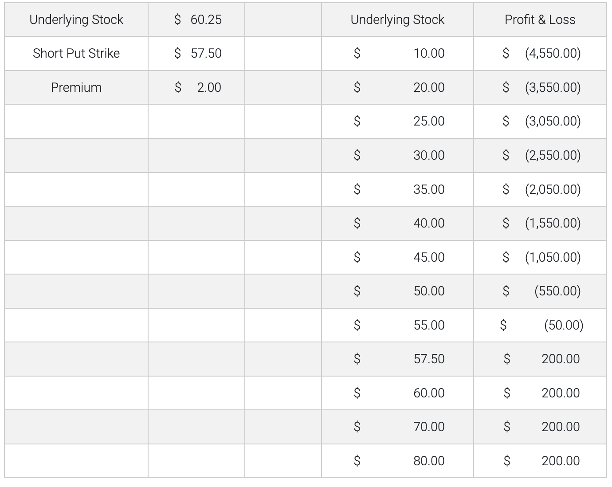

Bull Market - Short Put
An investor selling a put option receives a fixed premium and gives another investor the right but not the obligation to sell an asset at a predetermined price until expiration. A Short Put strategy might be considered by a risk-tolerant trader with the opinion that a stock’s price is likely to increase and/or volatility is likely to decrease. The put seller benefits from the passage of time and decreasing dividends. The maximum gain is the premium received, which occurs at any price above the strike price. The gain diminishes as the price of the underlying falls below the strike price. Breakeven occurs at the sum of the strike price less the premium received. At any price below that, the short put seller begins to lose money penny-for-penny as the underlying price decreases. Loss potential is substantial. Short put sellers must ensure that they are sufficiently capitalized to deliver any required shares. Short Put Example: • Underlying XYZ stock price: $60.25 • Put strike price: 57.50 • Put option premium: $2.00 • Days to expiration: 90 • Breakeven: 57.50-$2.00=$55.50 (Strike price minus premium received for put option) • Profit potential: Limited to the premium received from the sale of the put option at any price at and above the strike price. • Potential profit: @$60.00 – The put option is out-the-money at expiration and worth zero to someone who sold it for $2.00. • @$57.50 – The put option is at-the-money at expiration but has zero intrinsic value and is still worthless to someone who sold it for $2.00. • @54.00 - The put option is in-the-money at expiration and has intrinsic value. • Its worth is $3.50 and creates a loss to someone who sold it for $2.00 of $1.50. ($54.00 - 57.50 +$2.00 = -$1.50) • Maximum loss: Limited by the fact that the stock can only fall to zero. However, the investor starts to lose money at the strike price less the premium received (57.50 minus $2.00 = $55.50) and continues to lose penny-for-penny as the share price declines further. Market Outlook - Bull Volatility View - Premium decreases Time Erosion - Premium decays Dividends - Premium decreases Interest Rate - Premium increases Profit Potential - Limited Loss Potential - Substantial Components- Sell put option

Disclosures Options involve risk and are not suitable for all investors. For more information, read the “Characteristics and Risks of Standardized Options”. For a copy, call 312-542-6901. Trading on margin is only for sophisticated investors with a high risk tolerance. You may lose more than your initial investment. For additional information regarding margin loan rates, see ibkr.com/interest.
Multiple leg strategies, including spreads, will incur multiple commission charges.